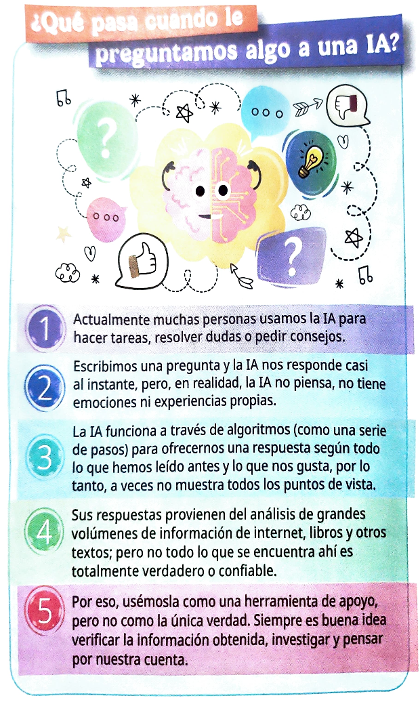
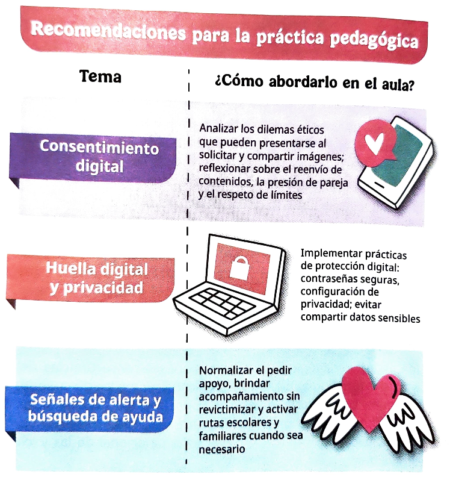

¿Qué son?
Las tecnologías digitales forman parte de nuestra vida diaria. Nos permiten comunicarnos, aprender, buscar información y entretenernos.


Redes sociales
Las redes sociales nos ayudan a compartir contenido y comunicarnos con otras personas. Sin embargo, es importante usarlas con responsabilidad.
Algoritmos
Son sistemas que seleccionan qué contenido aparece en nuestras redes según nuestros intereses y actividad.

Scroll infinito
Es una función que permite seguir viendo publicaciones sin cambiar de página. Puede hacer que pasemos más tiempo del que pensamos en internet.
Burbujas de información
Ocurren cuando vemos principalmente contenido parecido a nuestras ideas e intereses, por lo que conocemos menos opiniones diferentes.
Likes y seguidores
Los likes y seguidores pueden influir en cómo nos sentimos. No debemos medir nuestro valor por la aprobación que recibimos en internet.
Inteligencia artificial
La inteligencia artificial puede ayudarnos a encontrar información y resolver dudas, pero sus respuestas pueden contener errores. Siempre debemos comprobar la información.
Uso responsable
- Proteger nuestros datos personales.
- Respetar a los demás en internet.
- Verificar la información antes de compartirla.
- Tomar descansos de las pantallas.
- Pedir ayuda si algo en internet nos hace sentir incómodos.